El ' lehendakari ' advierte de que el debate va mejor en privado de lo que trasciende.
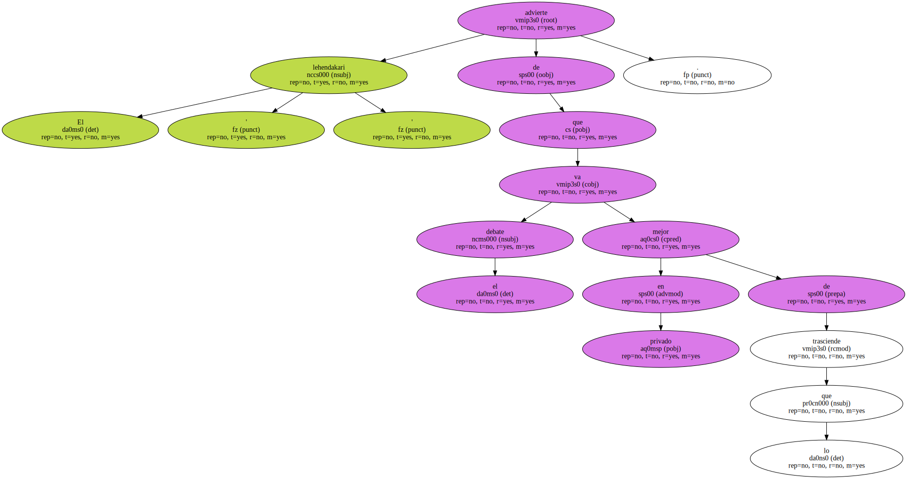Herri Batasuna afirma que los peneuvistas deben aceptar con deportividad las críticas de la banda.
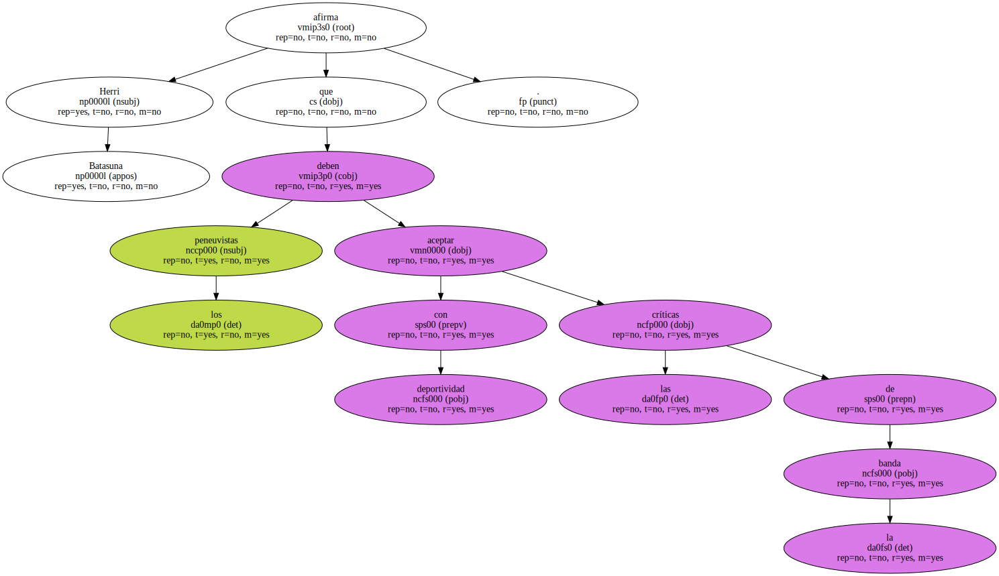El lehendakari Juan José Ibarretxe y los portavoces de la mesa nacional de Herri Batasuna coincidieron ayer en un análisis optimista del proceso de paz pese al último comunicado de ETA , en el que responsabilizaba a un sector del PNV de poner trabas a la pacificación.
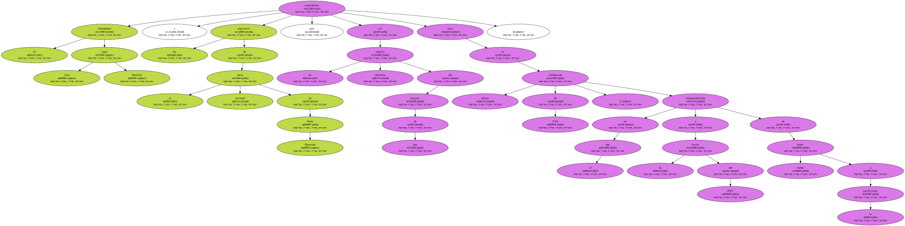Ibarretxe sostuvo que el debate en el ámbito privado va mejor de lo que trasciende al público , mientras que la coalición radical animó al PNV a que acepte los reproches de ETA " con deportividad " , porque " la crítica política es sana ".
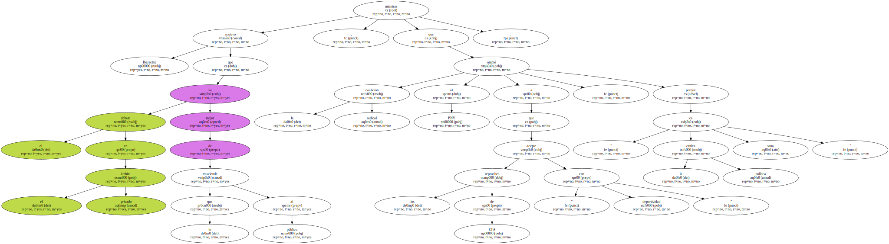Ibarretxe abrió el curso del Parlamento vasco en el palacio de Miramar , en San Sebastián , donde aprovechó para dar su punto de vista sobre los recientes comunicados de ETA.
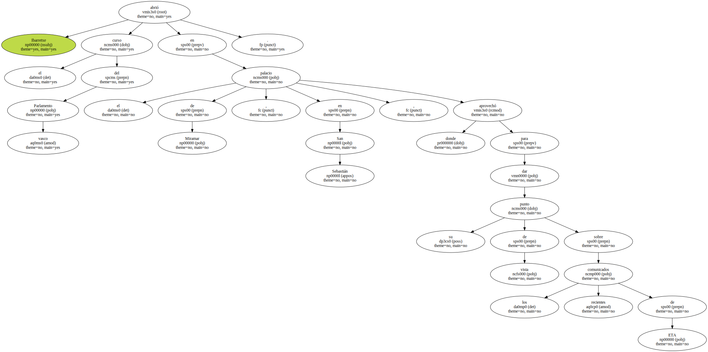Destacó de entrada que " la situación es notablemente mejor que la de hace un año " , y que Euskadi atraviesa " un buen momento económico , social y político ".
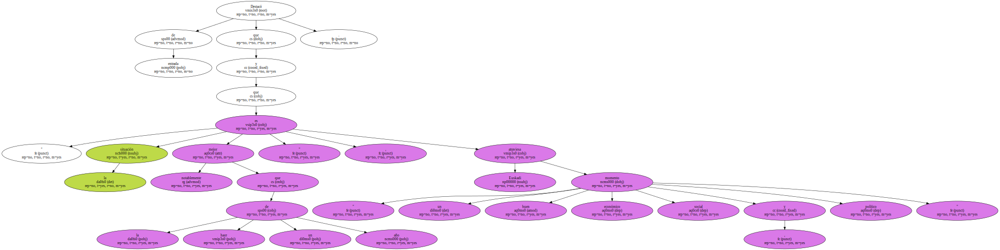Manteniendo su línea optimista , afirmó que " la paz está cada vez más cerca ".
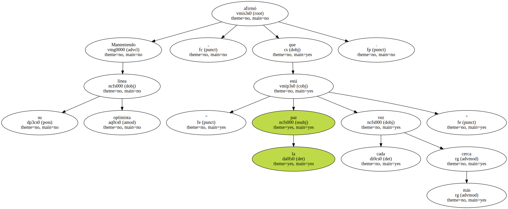En cualquier caso , Ibarretxe reconoció que existen problemas en el panorama vasco , como la aparición de episodios de violencia callejera , que calificó de " inaceptables " , y la ruptura de las conversaciones entre el Gobierno central y ETA.
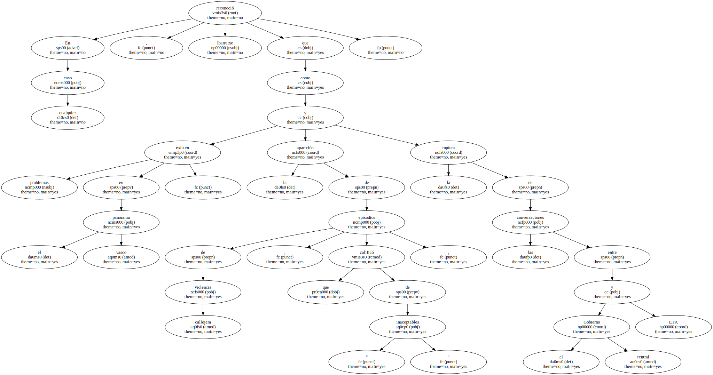Respecto a la suspensión del diálogo , al que aludió con el término " apagón " , Ibarretxe recomendó " no cerrar puertas " , porque el futuro del proceso está en " reconocer como válidos parte de los argumentos de los demás ".
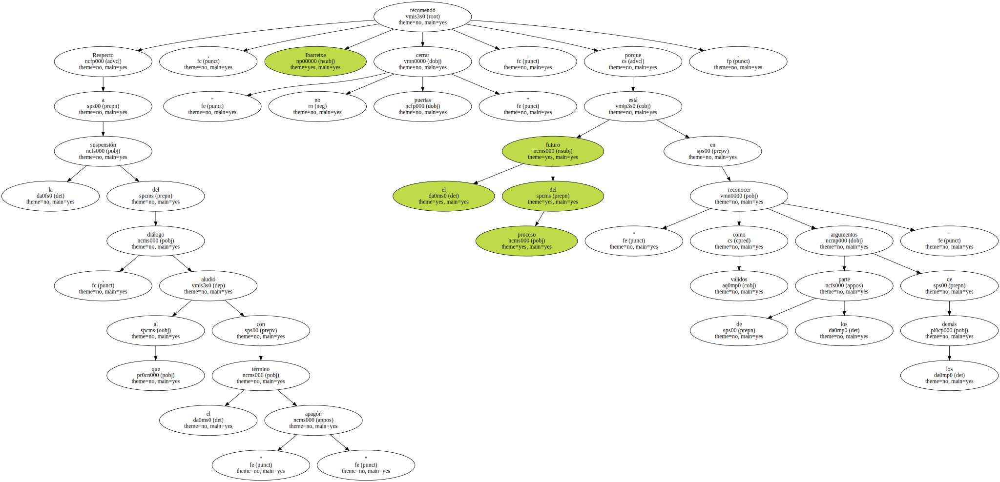El diálogo fue su receta para solventar los distintos niveles de enfrentamiento existentes en el País Vasco : " Deben dialogar el Gobierno y ETA , el lehendakari con los partidos políticos , y estas formaciones entre sí ".

A juicio de Ibarretxe , el proceso de paz se encuentra en fase de maduración , pero sin " marcha atrás " , porque " la sociedad no lo permitiría y pediría responsabilidades ".
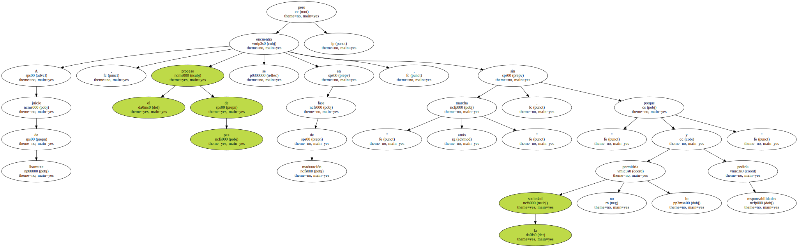Precisamente , destacó que el protagonismo del proceso de paz corresponde a los ciudadanos y a los partidos políticos.
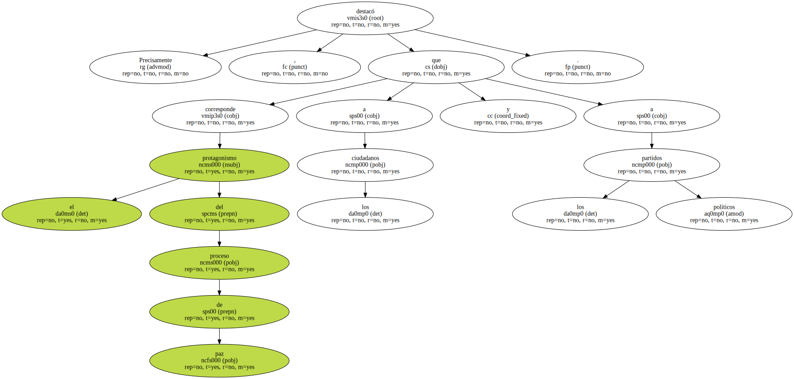También la mesa nacional de Herri Batasuna compareció para analizar los últimos comunicados de ETA.
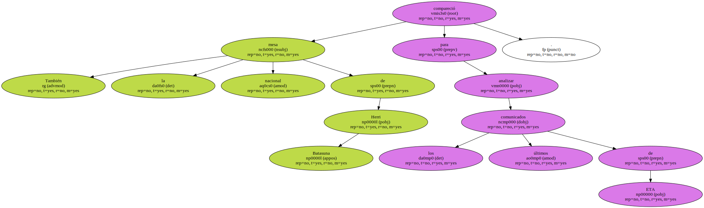Su portavoz , Arnaldo Otegi , destacó que la solución al conflicto pasa por garantizar la participación de los seis territorios vascos , incluidos los del otro lado de la frontera , y advirtió de la importancia de dos fechas futuras : el 12 de septiembre , primer aniversario del Pacto de Lizarra , y el 18 de septiembre , convocatoria de la Asamblea de Municipios Vascos.
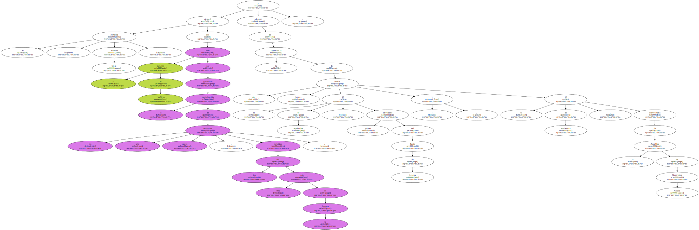Respecto a las descalificaciones que ETA lanzó al PNV a través de su último comunicado , HB matiza que se refieren únicamente a " algunos sectores " del partido nacionalista.
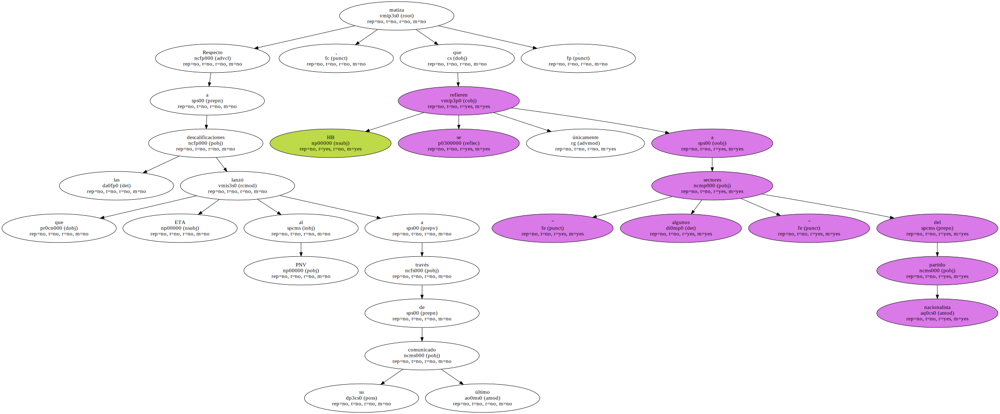En cualquier caso , recomendó al PNV " más deportividad " para asumir las críticas , " que en política siempre vienen bien ".
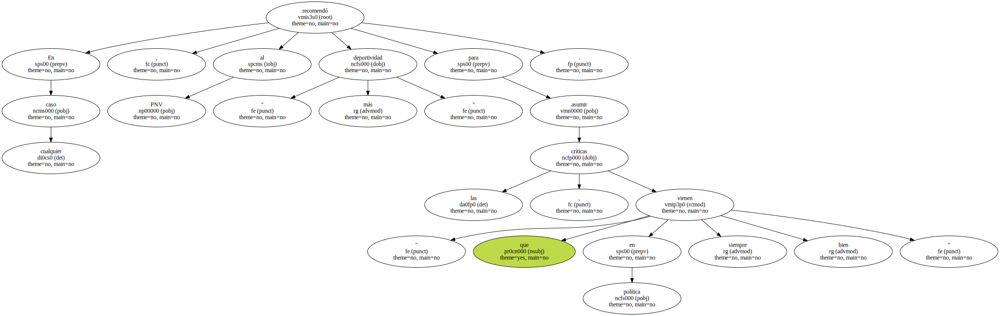Otegi añadió que ETA tiene derecho a expresar su opinión " como cualquier otro agente político , y , además , teniendo en cuenta que es parte fundamental en este conflicto ".
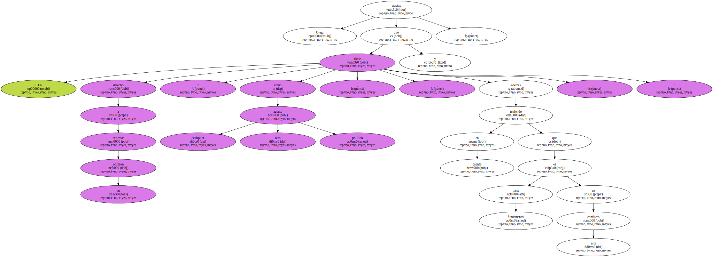